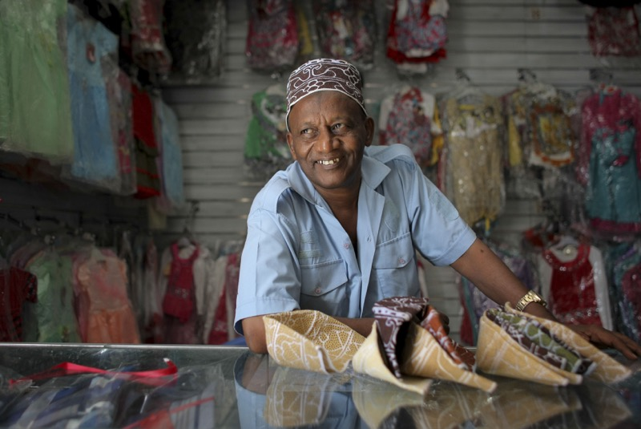

The Nordic International Support Foundation (NIS) has installed street lighting in Mogadishu, Jowhar and Balad, along several key routes in each city. The goal of this project is improve security at night helping to bolster mobility and economic growth.

To measure impact, shop keepers and people where interviewed along these streets where the lighting was installed. The following shows the impact the new lighting has had in improving security, gender mobility and economic prosperity.
Shop keepers along the newly lit roads were asked if the new lights helped improve income. A significant proporortion reported increased income since the lights were installed including two new shops that were created.
People were asked if they would visit the street if lights were not installed. Many people reported no (in red) they would not visit without the new lighting.
The majority of women reported feeling more secure and thus mobile as a result of the new lighting.
This map represents how frequently people visited the road each week.